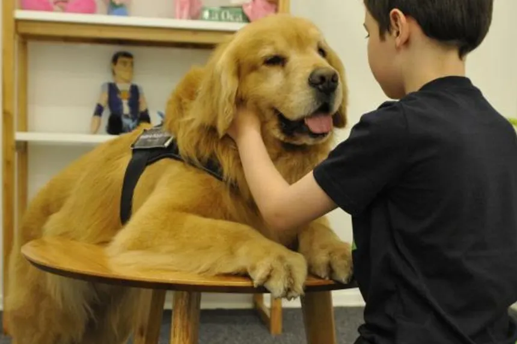

Perros guía
Son entrenados para acompañar y asistir a personas con discapacidad visual.
Revista Digital
SECCIÓN 01
Cada animal tiene características, necesidades y capacidades diferentes.
RAZAS DESTACADAS
Existen numerosas razas de perros, cada una con características físicas y de comportamiento particulares.
Algunas se destacan por su energía, otras por su tranquilidad, inteligencia, capacidad de aprendizaje o adaptación a diferentes entornos.
Conocer las características de una raza puede ayudarnos a comprender mejor sus necesidades.
Son entrenados para acompañar y asistir a personas con discapacidad visual.

Pueden colaborar con personas que necesitan diferentes tipos de apoyo en su vida cotidiana.
Participan en actividades destinadas a acompañar a personas en diferentes contextos.